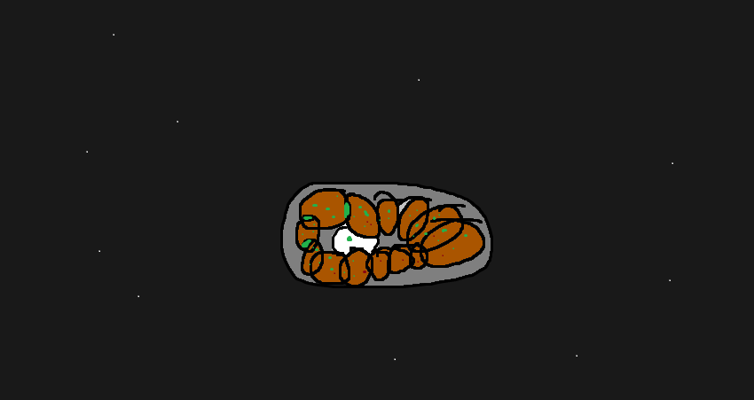
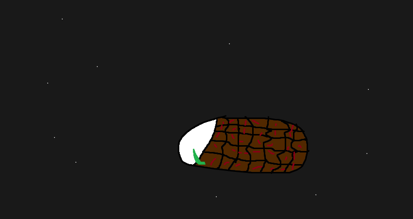

Mücver

Malzemeler:
- 2 adet kabak
- 1 adet soğan
- 2 yumurta
- 1 su bardağı un
- 1/2 demet maydanoz
- Tuz, karabiber, kimyon
- Zeytinyağı
Hazırlanış:
- Kabakları rendeleyin, suyunu sıkın.
- Soğanı ince doğrayın.
- Maydanozu kıyın.
- Yumurtaları çırpın, unu ekleyin.
- Rendelenmiş kabak, doğranmış soğan ve maydanozu ekleyin.
- Tuz, karabiber ve kimyon ekleyip karıştırın.
- Tavaya zeytinyağı koyup ısıtın.
- Kabaklı karışımdan kaşıkla alıp tavaya koyun, altın rengi alana kadar pişirin.
- Kağıt havlu serilmiş bir tabağa çıkarın ve fazla yağını alın.
- Sıcak servis yapın.
Baklava
Malzemeler:
- Yufka
- Antep fıstığı
- Tereyağı
- Şeker
- Su
Hazırlanış:
- Yufkayı açın, üst üste koyun.
- İç malzemesi olarak Antep fıstığı kullanın.
- Yufkayı fıstıklarla birlikte rulo yapın.
- Ruloları baklava şeklinde dizin.
- Tereyağı eritin ve baklavaların üzerine dökün.
- Fırına verin.
- Şerbeti hazırlayın ve sıcakken üzerine dökün.
- Servis yapın.
İskender

Malzemeler:
- 200 gr döner eti
- Yarım ekmek
- Yoğurt
- Tereyağı
- Domates sosu
- Salça
- Zeytinyağı
Hazırlanış:
- Ekmekleri küçük parçalara kesin ve fırında kızartın.
- Döner eti tavada ısıtın.
- Yoğurdu bir kasede çırpın.
- Üzerine kızarmış ekmekleri ve döner eti ekleyin.
- Domates sosu, salça ve tereyağı karışımını üzerine gezdirin.
- Servis yapın.